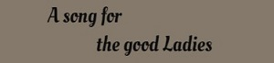

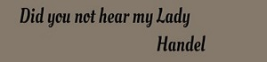

Convalescence
Nous sommes à la mi-Septembre 1914, deux des frères sont blessés et en convalescence à Lyon, et bientôt le troisième les rejoindra. Tous ont reçu ce que Ernst Jünger dans Orages d’acier décrit comme la ” fine blessure “ : la blessure suffisante pour vous envoyer à l’arrière pendant un certain temps, mais pas suffisamment sérieuse pour vous laisser handicapé à vie.
Commence alors une période de convalescence, une période de soulagement et de tranquillité.
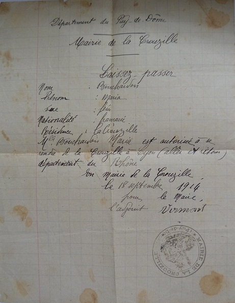
La famille est inquiète mais bientôt rassurée de les savoir tous en voie de rétablissement.
Marie et la Mère restent à la ferme, et ce sont Maria et le Père qui se rendent à Lyon pour visiter les frères à l’hôpital.
Nous sommes en temps de guerre et l’on ne peut se déplacer qu’avec un laissez-passer. Maria gardera ce laissez-passer dans un fonds de tiroir jusqu’à sa mort. Comme on a tous nos petites reliques personnelles, ce bout de papier précieusement conservé atteste sans doute de l’importance mais aussi de l’excitation de ce voyage à Lyon pour cette jeune fille de 20 ans à peine.
Les nouvelles sont bonnes et Maria s’empresse d’envoyer une carte à la ferme.
Chers Parents,
Nous venons de voir Gabriel et Auguste, ils vont très bien. C’est pas ce que vous croyez. Nous sommes été très content de le voir dans la cour.
Ce soir nous avons vu Auguste, il est tout à fait bien repris. Demain, il vient avec nous revoir Gabriel encore et ne portez pas peine de nous. Le voyage s’est bien passé et nous ne savons pas quel train nous pourrons prendre.
Maria
 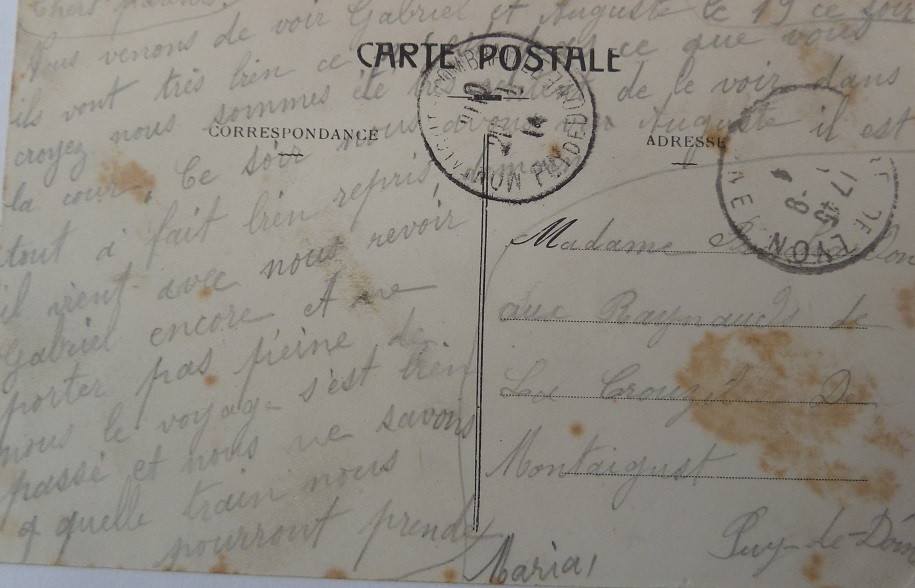
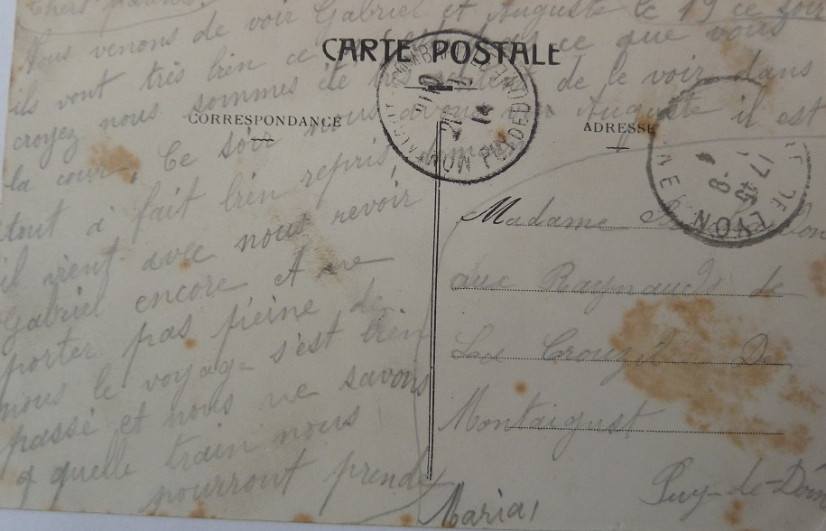
Face à l’ampleur des pertes lors des premiers combats, la France organise très rapidement un service de rapatriement des blessés. Comme toujours, les chemins de fer jouent un rôle primordial : ils charrient les soldats vers le front, ils ramènent les blessés vers l’arrière.
Lyon devient très vite un centre de traitement important et les premiers trains sanitaires arrivent aux gares de Vaise ou de la Part-Dieu dès le 21 Août 1914.
La vidéo sur la gauche de votre écran décrit cette importante logistique sanitaire et le parcours que les trois frères suivront avant de rejoindre leurs hôpitaux respectifs.
En ce début du conflit, nombreux sont ceux qui pensent ou espèrent encore que la guerre sera bientôt finie et cela est sans doute le cas pour nos trois soldats.
Mais, en réalité, ce temps de convalescence ne sera qu’un temps de répit mesuré à l’aune des blessures de chacun. Comme les semaines et les mois passent et que le conflit s’enlise, Gabriel, Auguste et Antoine comprennent très vite qu’ils ne sont qu’en sursis …
Gabriel sera le premier à repartir, et dans la correspondance de début Octobre on évoque déjà son retour au dépôt du régiment à Roanne.
Mon cher cousin,
J’ai reçu ta carte avec beaucoup de plaisir car tu ne m’écrivais plus … je ne pouvais pas t’écrire avec le temps qui se présente.
Les parents et Legay ont battu à la batteuse cette semaine, tout a bien marché.
Ton frère Auguste m’a écrit la semaine dernière. Il va bien. Quant à toi, il faut te dépêcher à guérir pour venir nous voir. Ne te fais pas de mauvais sang , et écris moi toujours quelque fois.
Je ne vois pas autre chose à te dire pour le moment, notre santé va bien.
Je termine en t’embrassant bien fort.
Ton cousin, Félix Blanc
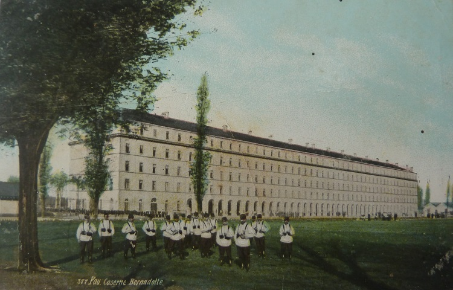
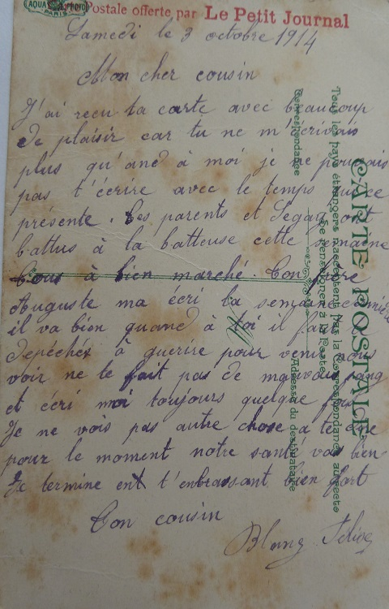
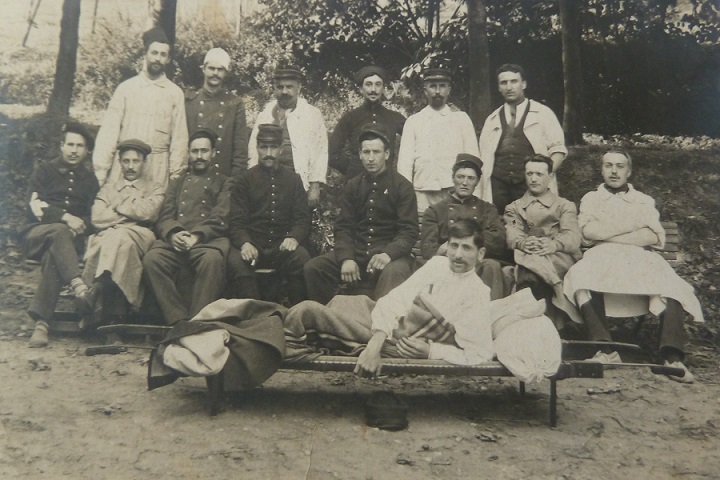
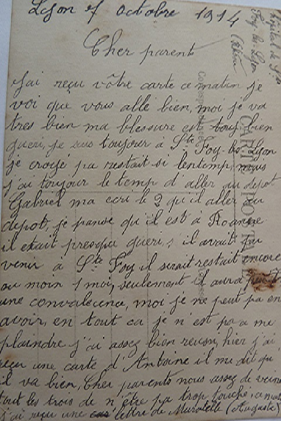
Auguste, au centre, 1er rang
Chers Parents,
J’ai reçu votre carte ce matin, je vois que vous allez bien. Moi, je va très bien, ma blessure est toute bien guérie.
Je suis toujours à Sainte Foy les Lyons. Je croyais pas rester si longtemps, mais j’ai toujours le temps d’aller au dépôt. Gabriel m’a écrit le 2 qu’il allait au dépôt, je pense qu'il est à Roanne. Il était presque guéri. S’il avait pu venir à Ste Foy, il serait resté encore au moins un mois. Seulement, il aura peut-être une convalescence.
Moi je ne peux pas en avoir. En tout cas, je n’ai pas à me plaindre, j’ai assez bien réussi. J’ai reçu une carte d’Antoine, il me dit qu’il va bien.
Chers parents, nous avons assez de veine tous les trois de n’être pas trop touchés. J’ai reçu une lettre de Muratel.
Auguste
Chers Parents,
Je vous écris pour vous dire que je pars ce soir pour rejoindre mon dépôt. Nous aurons deux jours d’arrêt à Toulouse. Je vous écrirai aussitôt arrivé.
Je suis en bonne santé, ma blessure va très bien.
C’est tout pour le moment, je vous embrasse tous bien fort.
Antoine
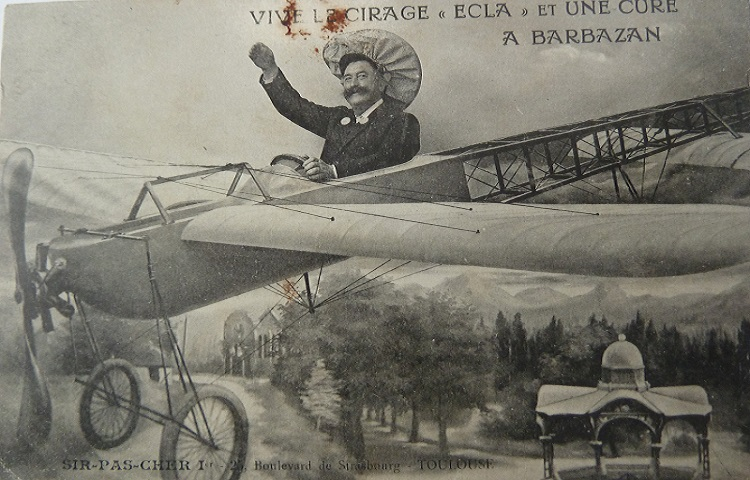
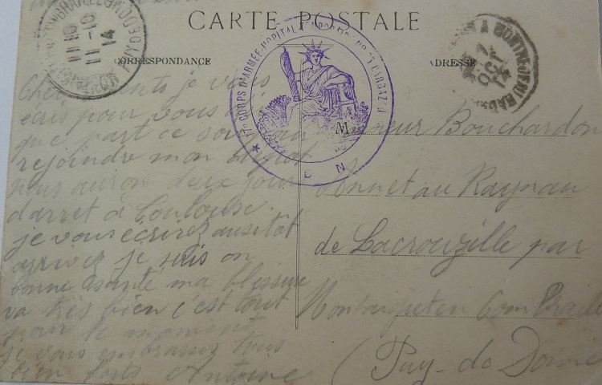
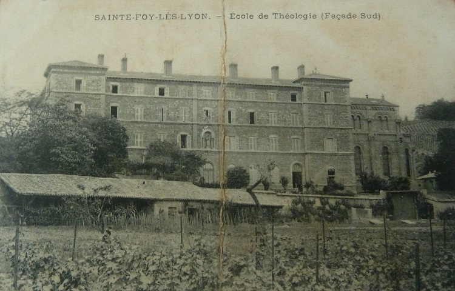
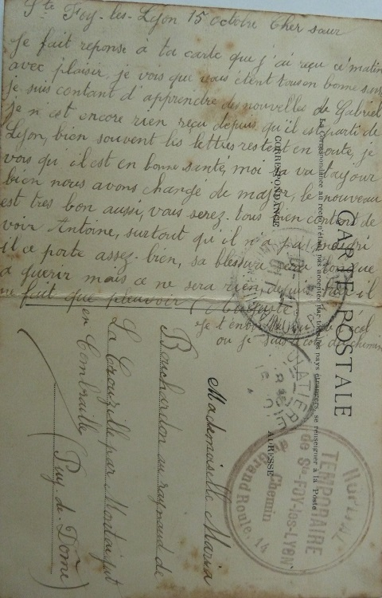
Chère sœur,
Je fais réponse à ta carte que j’ai reçue ce matin avec plaisir, je voie que vous êtes tous en bonne santé.
Je suis content d’apprendre des nouvelles de Gabriel. Je n’ai encore rien reçu depuis qu’il est parti de Lyon. Bien souvent, les lettres restent en route. Je vois qu’il est en bonne santé.
Moi ça va toujours bien. Nous avons changé de major, le nouveau est très bon aussi.
Vous serez tous bien contents de voir Antoine, surtout qu’il n’a pas maigri. Il se porte assez bien. Sa blessure sera longue à guérir, mais ce ne sera rien.
Depuis hier, il ne fait que pleuvoir.
Auguste
(Je t’envoie une vue de l’école où je suis, du côté du chemin)
Auguste écrit beaucoup et bien-sûr, il n'oublie pas les deux jumelles ...
Chère fillieule,
Je t’écris ces deux mots pour te donner de mes nouvelles et en apprendre des tiennes.
Je suis toujours en bonne santé, maintenant je suis bien guéri. Je ne sais pas quand j’irai au dépôt. Je pense rester encore quelques jours ici.
Je pense qu’Antoine va bien, vous avaient été tous bien contents de le voir, mais ce sera vite passé.
Ton parrain qui t’embrasse bien fort.
Auguste
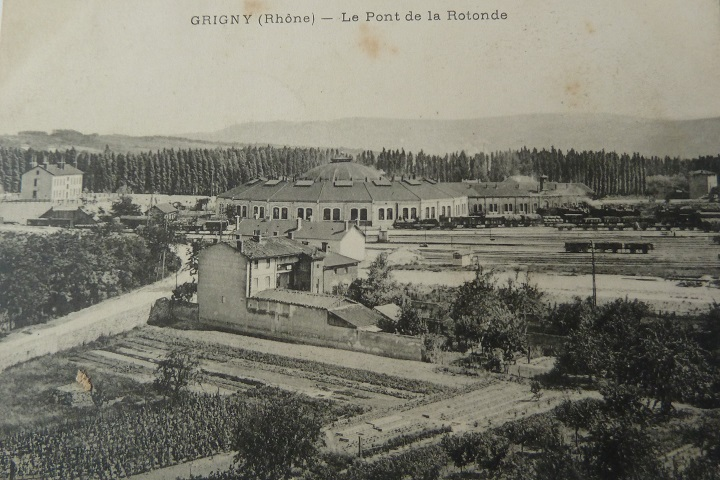
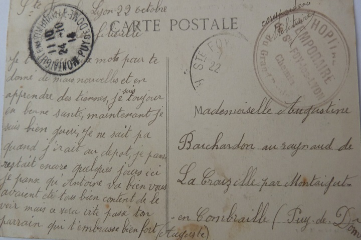
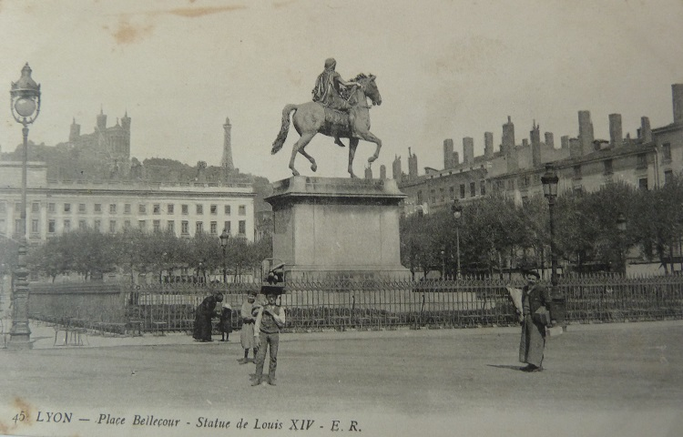
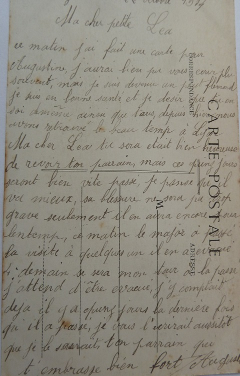
Ma chère petite Léa,
Ce matin, j’ai fait une carte pour Augustine. J’aurais bien pu vous écrire plus souvent, mais je suis devenu un peu flémard. Je suis en bonne santé et je désire que tu en sois de même ainsi que tous.
Depuis hier nous avons retrouvé le beau temps à Lyon.
Ma chère Léa, tu seras été bien heureuse de revoir ton parrain, mais ces quinze jours seront bien vite passés. Je pense qu’il va mieux, sa blessure ne sera pas trop grave, seulement il en aura encore pour longtemps.
Ce matin le major a passé la visite à quelques-uns, il en a évacué quatre. Demain, ce sera mon tour de la passer. J’attends d’être évacué, j’y comptait déjà il y a quinze jours, la dernière fois qu’il est passé. Je vous l’écrirai aussitôt que je le saurai.
Ton parrain qui t’embrasse bien fort. Auguste
Augustine et Léa (il fait beau ces jours)
Cher frère,
Nous t’envoyons une carte pour toutes deux. Nous t’embrassons bien fort et te remercions de tes deux cartes qui nous ont fait plaisir, nous désirons te voir.
D’abord tâche de venir, mais en attendant ne te ménage pas trop. Tu sais nous avons encore de l’argent et nous en gagnons tous les jours chez nous mais toi tu gagnes peu. Alors soigne toi de ton mieux, tu nous fâcherais si tu n’agissais pas ainsi.
Nous étudions tous les jours un peu en attendant ton retour.
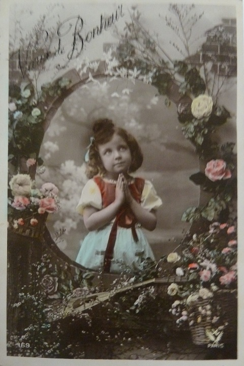
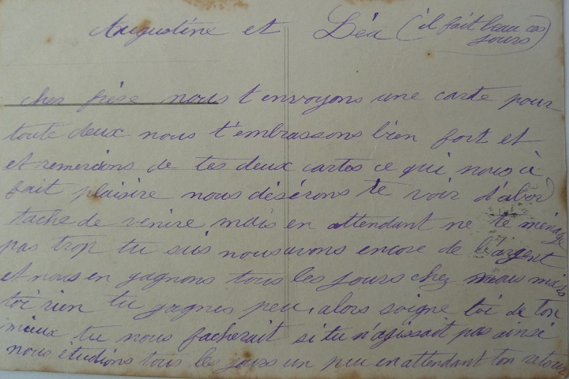
C’est maintenant au tour d’Auguste d’être fixé sur son sort, et entre en scène un personnage tout puissant : le Major. Le Major est le médecin chef et d’un coup de signature, c’est lui qui peut décider de votre retour au front … On apprend aussi pourquoi Auguste écrit autant … il a un stock de cartes postales à écouler !!!
Mais avant de lire les cartes d’Auguste, attardons-nous un moment sur le médecin-chef. Dans son style inimitable et corrosivement sarcastique, Céline en fait une description inoubliable dans Voyage au bout de la nuit. Les trois frères sont sans doute bien plus respectueux de l’autorité que Céline mais au plus profond d’eux-mêmes, ils ont peut-être les mêmes pensées …
… Au réveil, notre nouveau médecin-chef est venu se faire connaître, tout content de nous voir, qu’il semblait, toute cordialité dehors. Il avait des raisons de son côté pour être heureux, il venait d’être nommé à quatre galons. Cet homme possédait en plus les plus beaux yeux du monde, veloutés et surnaturels, il s’en servait beaucoup pour l’émoi de quatre charmantes infirmières bénévoles qui l’entouraient de prévenances et de mimiques et qui n’en perdaient pas une miette de leur médecin-chef. Dès le premier contact, il se saisit de notre moral, comme il nous en prévint. Sans façon, empoignant familièrement l’épaule de l’un de nous, le secouant paternellement, la voix réconfortante, il nous traça les règles et le plus court chemin pour aller gaillardement et au plus tôt encore nous refaire casser la gueule.
D’où qu’ils provinssent décidément, ils ne pensaient qu’à cela. On aurait dit que ça leur faisait du bien. C’était le nouveau vice. « La France, mes amis, vous a fait confiance, c’est une femme, la plus belle des femmes la France ! entonna-t-il. Elle compte sur votre héroïsme la France ! Victime de la plus lâche, de la plus abominable agression. Elle a le droit d’exiger de ses fils d’être vengée profondément la France ! D’être rétablie dans l’intégrité de son territoire, même au prix du sacrifice le plus haut la France ! Nous ferons tous ici, en ce qui nous concerne, notre devoir, mes amis, faites le vôtre ! Notre science vous appartient ! Elle est vôtre ! Toutes ses ressources sont au service de votre guérison ! Aidez-nous à votre tour dans la mesure de votre bonne volonté ! Je le sais, elle nous est acquise votre bonne volonté ! Et que bientôt vous puissiez tous reprendre votre place à côté de vos chers camarades des tranchées ! Votre place sacrée ! Pour la défense de notre sol chéri. Vive la France ! En avant ! » Il savait parler aux soldats.
Nous étions chacun au pied de notre lit, dans la position du garde-à-vous, l’écoutant. Derrière lui, une brune du groupe de ses jolies infirmières dominait mal l’émotion qui l’étreignait et que quelques larmes rendirent visible. Les autres infirmières, ses compagnes, s’empressèrent aussitôt : « Chérie ! chérie ! Je vous assure … Il reviendra, voyons !...»
… J’essayai de me rappeler et de comprendre le sens de cette allocution qu’il venait de prononcer, l’homme aux yeux splendides, mais loin, moi, de m’attrister elles me parurent en y réfléchissant, ces paroles, extraordinairement bien faites pour me dégoûter de mourir. C’était aussi l’avis des autres camarades, mais ils n’y trouvaient pas au surplus comme moi une façon de défi et d’insulte. Eux ne cherchaient guère à comprendre de qui se passait autour de nous dans la vie, ils discernaient seulement, et encore à peine, que le délire ordinaire du monde s’était accru depuis quelques mois, dans de telles proportion, qu’on ne pouvait décidément plus appuyer son existence sur rien de stable.
Ici à l’hôpital tout comme dans la nuit des Flandres la mort nous tracassait : seulement ici, elle nous menaçait de plus loin la mort irrévocable tout comme là-bas, c’est vrai, une fois lancée sur votre tremblante carcasse par les soins de l’Administration.
Ici, on ne nous engueulait pas, certes, on nous parlait même avec douceur, on nous parlait tout le temps d’autre chose que de la mort, mais notre condamnation figurait toutefois bien nette au coin de chaque papier qu’on nous demandait de signer, dans chaque précaution qu’on prenait à notre égard : Médailles … Bracelets … La moindre permission … N’importe quel conseil … On se sentait comptés, guettés, numérotés dans la grande réserve des partants de demain …
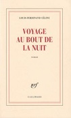
Extraits - Voyage au bout de la nuit - Louis Ferdinand CELINE
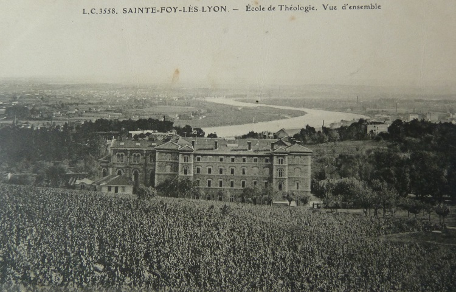
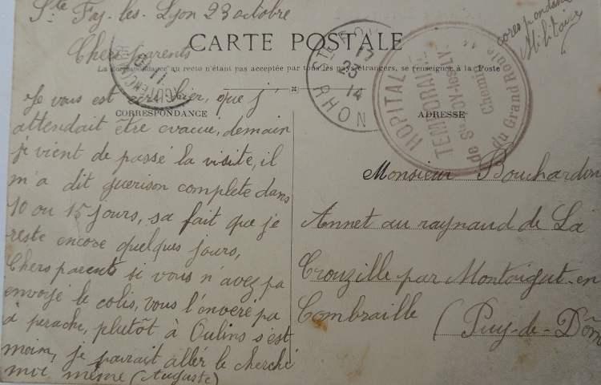
Chers Parents,
Je vous ai écrit hier que j’attendais d’être évacué demain.
Je viens de passer la visite, il m’a dit guérison complète dans 10 ou 15 jours – ça fait que je reste encore quelques jours.
Chers parents, si vous n’avez pas envoyé le colis, vous l’enverrez pas à Perrache, plutôt à Oullins, c’est moins loin. Je pourrai aller le chercher moi-même.
Auguste
Chère sœur,
Je suis toujours à Ste Foy, je vous l’ai déjà écrit, je resterai encore une dizaine de jours. Je suis bien guéri. Je pense de voir Antoine aussitôt qu’il sera arrivé ce matin.
J’ai reçu une carte de Gabriel, il va bien. Je pense qu’Antoine pourra le voir en passant.
Hier, j’ai visité la belle église de Fourvière. Je t’assure que si tu revenais à Lyon, tu t’en irais pas sans la voir. Après, j’ai fait un tour sur la place Bellecour. J’ai trouvé Cellier, il ne pense pas de partir de si tôt.
J’ai reçu une lettre de Buxières, Gabriel est à l’hôpital pour des douleurs et que Fernand est blessé. Voilà une dizaine de jours que je vous écris assez souvent, j’avais beaucoup de cartes qu’on nous avait données. Ça fait que je les emploie.
Je suis bien content de recevoir de vos nouvelles.
Auguste
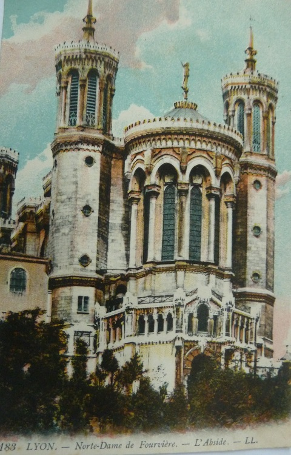

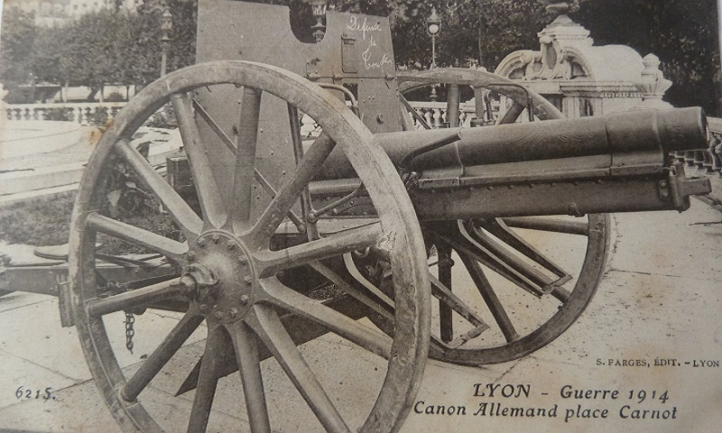
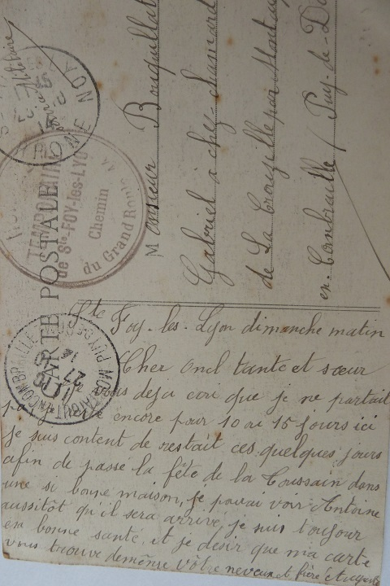
Chers Oncle, Tante et Sœur,
Je vous avais déjà dit que je ne partais pas, je reste encore pour dix ou quinze jours ici.
Je suis content de rester ces quelques jours afin de passer la fête de la Toussaint dans une si bonne maison. Je pourrai voir Antoine, aussitôt qu’il sera arrivé.
Je suis toujours en bonne santé et je désire que ma carte vous trouve de même.
Votre neveu et frère.
Auguste
Mais pour Gabriel, déjà de retour au dépôt, les choses se précisent ... il repart mais ne sait pas où ...
Je suis toujours à Roanne pour le moment.
J’attends tous les jours le départ. J’ai reçu des nouvelles de chez nous et un paquet.
Antoine m’a pas écrit.
Je t’embrasse bien fort.
Gabriel
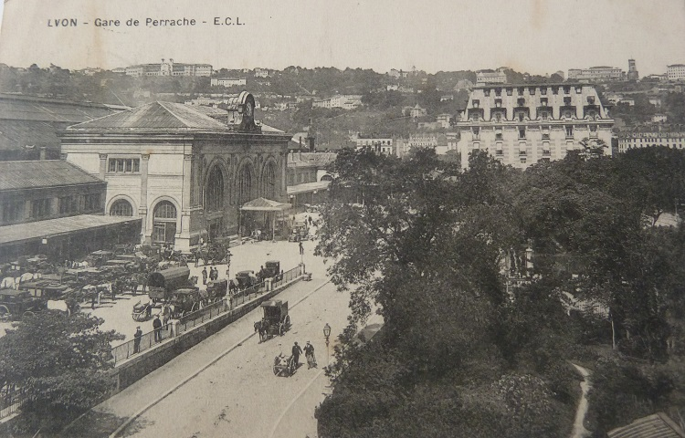
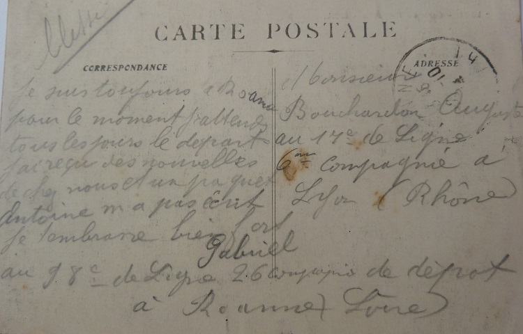
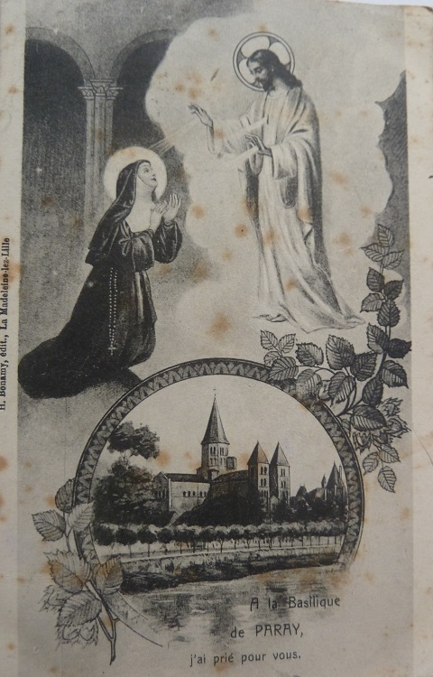
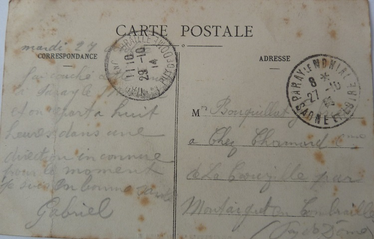
J’ai couché cette nuit à Paray Le Monial.
On part à huit heures dans une direction inconnue pour le moment.
Je suis en bonne santé.
Gabriel
Désormais, seuls Auguste et Antoine restent à Lyon et font tous leur possible pour se retrouver. Auguste est à Sainte-Foy-Les-Lyons alors qu'Antoine est à la brasserie du Parc, transformée en hôpital temporaire. Tous les deux sont inquiets pour Gabriel dont ils ne reçoivent pas de nouvelles.
Cher frère,
Je t’écris pour te dire que je ne pars pas de cette fois. Je ne sais pas si je vais rester bien longtemps, je suis encore là pour quelques jours.
Je vas demander d’aller en promenade pour dimanche et j’irai te voir si je peux l’avoir mais il y a rien de sûr.
Je tâcherai d’aller te voir un de ces jours. C’est tout pour aujourd’hui.
Je n’ai pas reçu de nouvelles depuis mardi.
Auguste
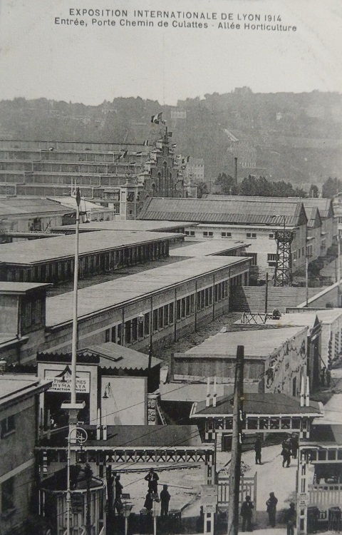
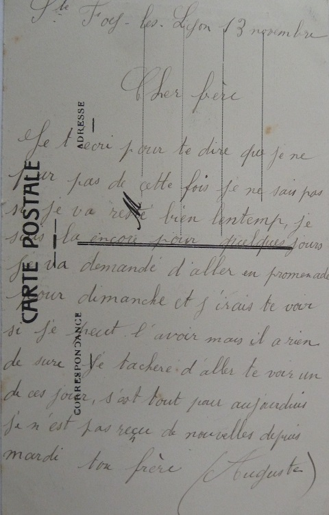
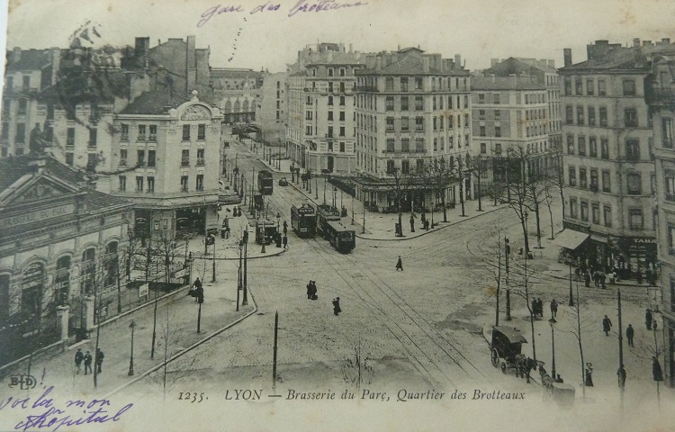
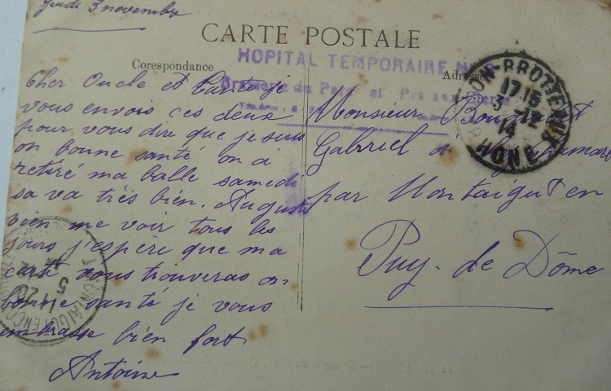
Chers Oncle et Tante,
Je vous envoie ces deux mots pour vous dire que je suis en bonne santé.
On a retiré ma balle samedi, ça va très bien. Auguste vient me voir tous les jours.
J’espère que ma carte vous trouvera en bonne santé. Je vous embrasse bien fort.
Antoine
Cher frère,
J’ai reçu ta carte hier. Je vois que tu ne peux pas sortir.
Pour moi, on ne peut plus sortir que sous la conduite d’un gradé. Je pense de te voir demain, et nous causerons un moment.
Ce n’est pas la peine que tu viennes, je vas aller au dépôt un de ces jours. Ça ira mieux pour te voir que si tu étais à Ste Foy.
Je n’ai rien reçu de Gabriel.
Auguste
 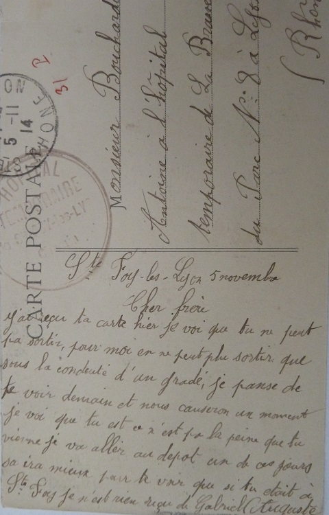
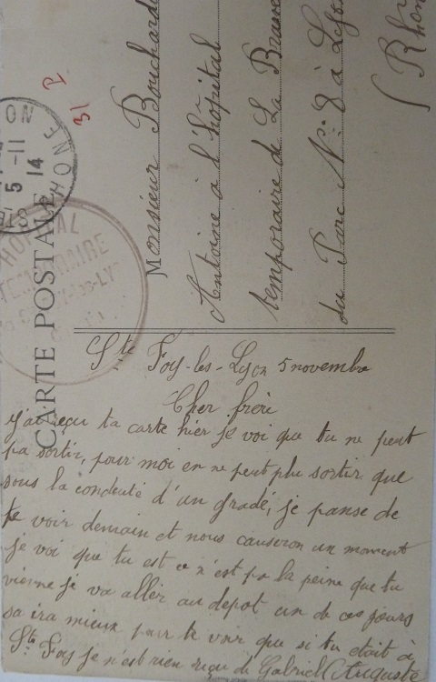
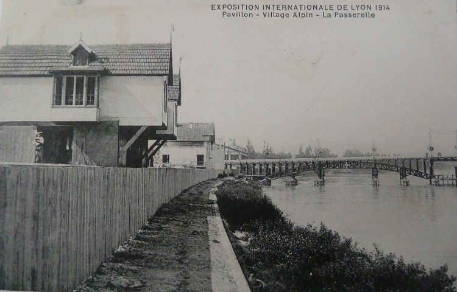
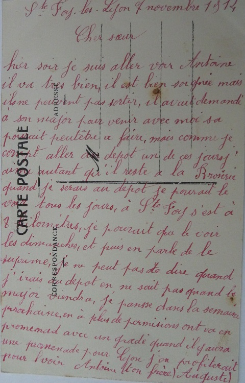
Chère sœur,
Hier soir, je suis allé voir Antoine. Il va très bien, il est bien soigné mais ils ne peuvent pas sortir.
Il avait demandé à son major pour venir avec moi. Ça pourrait peut-être se faire, mais comme je compte aller au dépôt un de ces jours, j’aime autant qu’il reste à la Brasserie. Quand je serai au dépôt, je pourrai le voir tous les jours.
A Ste Foy, c’est à 8 kilomètres, je pourrais que le voir les dimanches et puis on parle de le supprimer. Je ne peux pas te dire quand j’irai au dépôt, on ne sait pas quand le major viendra.
Je pense dans la semaine prochaine, on aura plus de permissions et on va en promenade avec un gradé. Quand il y aura une promenade pour Lyon, j’en profiterai pour voir Antoine.
Ton frère. Auguste
Cher frère,
Ce matin j’ai reçu un télégramme de chez nous.
Je leur avais écrit qu’ils donnaient des permissions au dépôt. Ils m’ont télégraphié pour me dire de la prendre.
J’ai reçu une lettre de Chez Chamard, tout va bien, ils me parlent pas de Gabriel. Je t’avais dit que j’irai te voir demain mardi, mais il faut pas y compter, peut-être mercredi, mais je ne sais pas si il y aura des promenades.
Demain, je t’écrirai une lettre. Peut-être que je serai évacué, le major passe ce soir.
Auguste
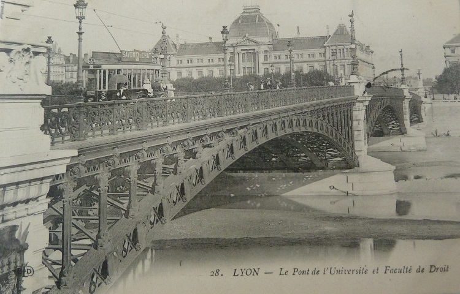
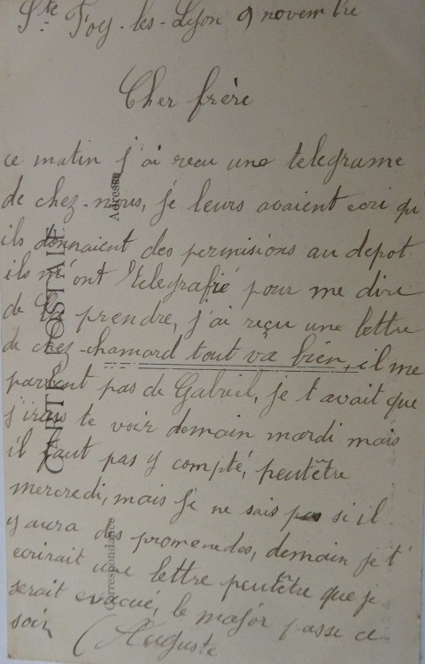
Maintenant qu'Antoine est bien établi, il échange à nouveau des cartes avec les deux petites jumelles. La carte de Léa est l'une de mes préférées ...
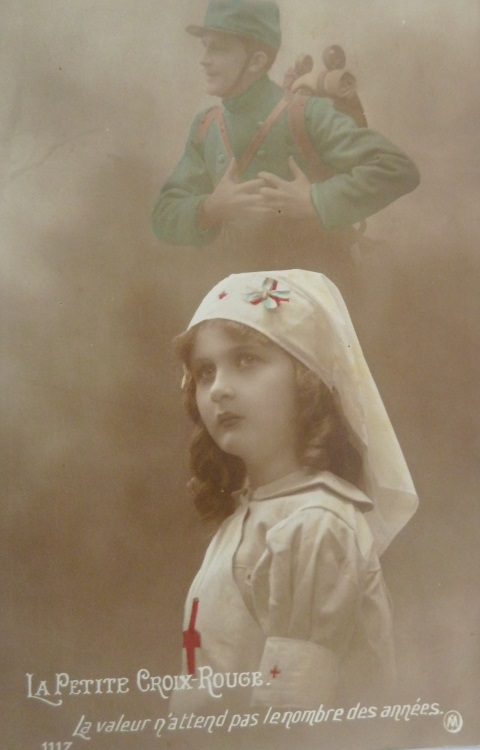
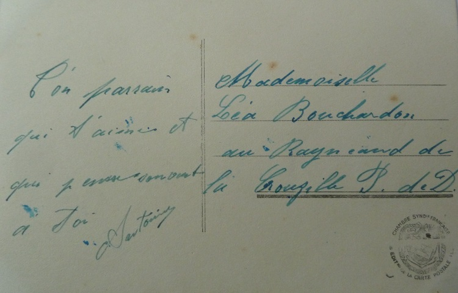
Ton parrain qui t’aime et qui pense souvent à toi.
Antoine
Cher parrain,
Je t’envoie une vue de Pionsat où je suis allée hier avec Augustine, maman et le mouton pour nous chausser.
Je pense que ma carte te trouvera de mieux en mieux. Surtout ne te fais pas de mauvais sang, soigne toi bien. Augustine écrit en même temps à Auguste.
Cher parrain, nous avons fini d’ensemencer hier soir. Il a fait très beau ces deux jours. Nous avons bien travaillé. Augustine a pris du mieux, son gredin lui passera bien petit à petit. Maria tricote des gants pour vous autres.
Courage cher parrain, ne désespère pas car vous vous retrouverez tous les trois.
A bientôt, ta sœur qui t’embrasse.
Léa
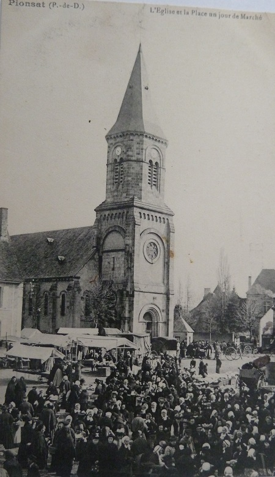
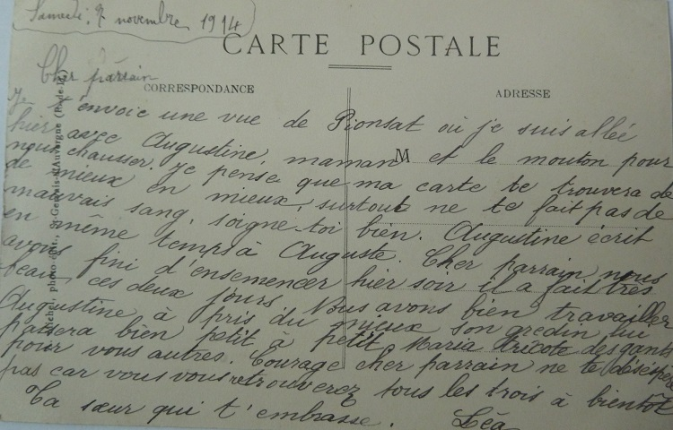
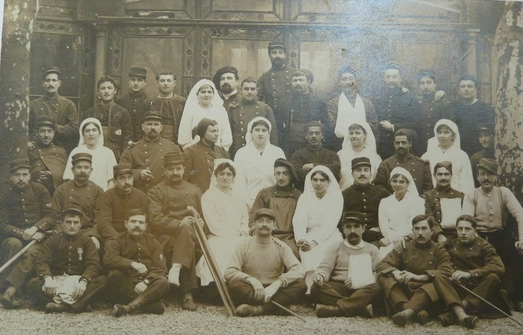
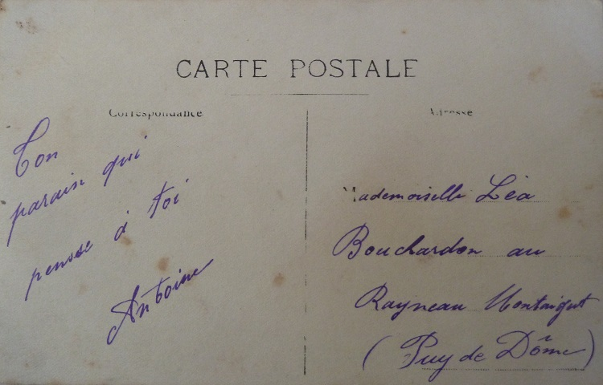
Ton parrain qui pense à toi.
Antoine
Ma chère filleule,
J’espère que ma carte te trouvera en bonne santé ainsi que toute la maison.
Pour moi, tu vois que je me fais pas de bile.
Ton parrain qui pense à toi et qui t’embrasse.
Antoine
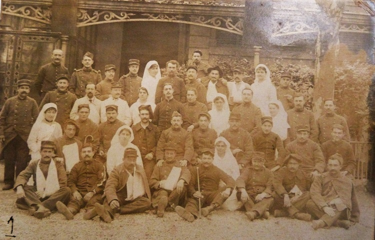
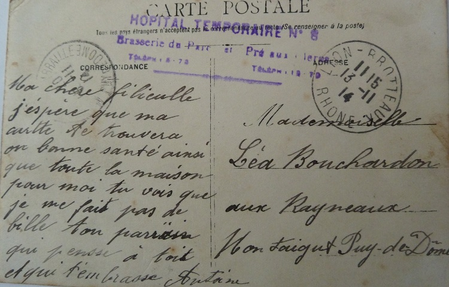
Antoine, au premier rang à gauche, avec le bras en bandoulière
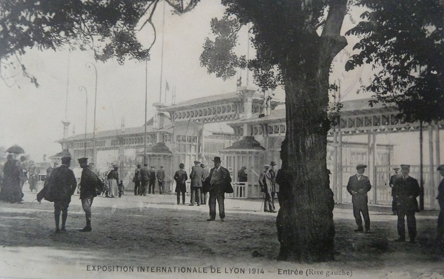
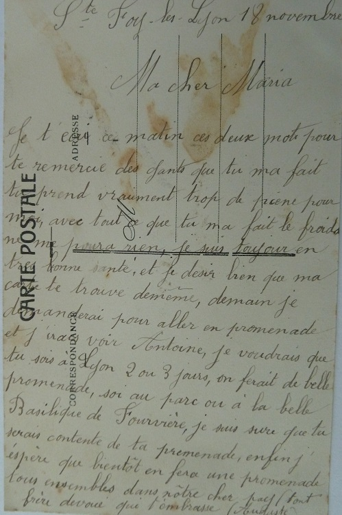
Ma chère Maria,
Je t’écris ce matin ces deux mots pour te remercier des gants que tu m’as fait. Tu prends vraiment trop de peine pour moi. Avec tout ce que tu m’as fait, le froid ne me pourra rien.
Je suis toujours en très bonne santé, et je désire que ma carte te trouve de même. Demain, je demanderai pour aller en promenade et j’irai voir Antoine.
Je voudrais que tu sois à Lyon 2 ou 3 jours, on ferait de belles promenades, soit au parc, soit à la basilique de Fourvière. Je suis sûr que tu serais contente de ta promenade.
Enfin j’espère que bientôt on fera une promenade tous ensembles dans notre cher pays.
Ton frère dévoué qui t’embrasse.
Auguste
Chers Parents,
Je vous écris ces deux mots pour vous dire que je ne va pas au dépôt de cette semaine. Je ne peux pas vous dire si je resterai encore bien longtemps. Je peux rester encore huit jours comme des fois quinze, on en sait rien d’avance.
Enfin, j’aime autant passer huit jours ici qu’au dépôt et je sais que vous aimez mieux me savoir à Ste Foy qu’au 17eme. J’ai toujours le temps d’y rester.
Demain, je demanderai une permission pour aller voir Antoine. C’est tout pour aujourd’hui.
Je termine en vous embrassant bien fort.
Auguste
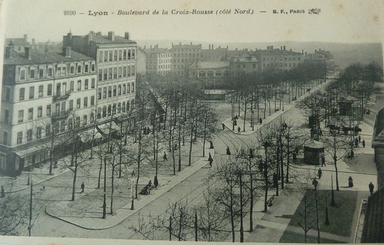
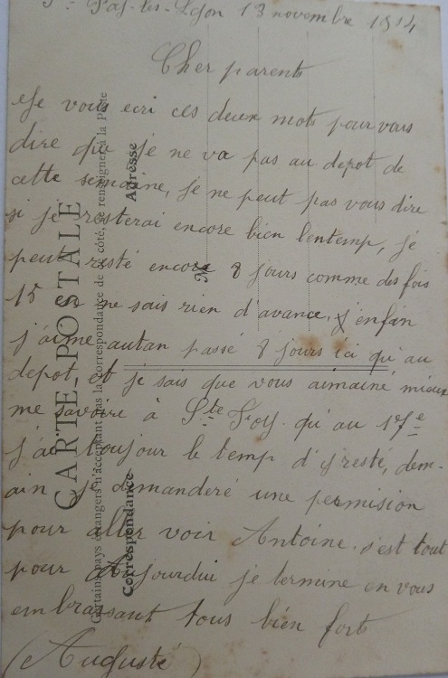
Son hôpital se remplit et c'est maintenant au tour d'Auguste de rejoindre le dépôt du 17eme, situé dans l'actuel lycée du Parc à Lyon. Retourner au dépôt, cela signifie bien souvent reprendre le chemin de la guerre.
Dans La Peur, un livre crû et sincère sur les réalités de la guerre et qui choqua certains en son temps, Gabriel Chevallier décrit fort bien cette relation étrange entre les blessés et l’hôpital et comment, par exemple, ils estiment la durée probable de la guerre selon le degré de leurs blessures …
… Nous parlons souvent de la guerre. Tous ceux qui ne sont pas touchés sérieusement affirment qu’elle ne doit plus durer longtemps. Nous espérons moins un dénouement triomphal que la fin, qui nous rendra la sécurité. Y retourner est un programme qui nous glace d’horreur et nous refusons de l’envisager. L’avenir nous offre un délai, variable selon notre cas, qui comprend : la guérison à l’hôpital, la convalescence, la permission et un stage au dépôt. De quatre à six mois pour la plupart. Nous estimons que la durée de la guerre ne peut excéder ce délai et que le formidable bloc France-Angleterre-Russie-Italie-Belgique-Japon aura nécessairement raison des Empires centraux, quelle que soit la valeur que nous, combattants, reconnaissions aux Allemands. L’offensive de printemps entraînera tout. A défaut d’une grande victoire, l’épuisement d’un clan terminera l’affaire, ou la lassitude générale.
Quelques-uns, au contraire, Mouchetier en tête prétendent que « ça peut durer des années à la façon dont vont les choses, qu’il y aura encore des surprises » et apportent à le soutenir un acharnement qui étonne. Témoin l’autre jour de la discussion, j’ai soudain compris : tous les pessimistes étaient des mutilés. Il leur est trop cruel de penser qu’ils ont perdu un membre juste au dernier moment, qu’avec un peu de chance ils auraient pu revenir intacts. Ils préfèrent croire que la mutilation leur a non seulement assuré la vie, mais qu’elle leur épargnera des années de souffrance.
J’ai communiqué mon observation à Nègre et aux moins malades. Depuis, quand on soulève la question, nous ne sommes plus aussi affirmatifs.
Tournés vers les mutilés, qui sont toujours groupés, nous leur avons déclaré, avec un air d’envie : « Vous êtes les veinards, vous ! » Ils ont souri et un peu oublié leurs regrets. Et Bardot, campé sur ses béquilles, nous a répondu gentiment :
_ On vous en souhaite autant quand vous y remonterez.
_ Sûr, a appuyé un autre, vaut mieux revenir amoché que de ne pas revenir du tout !...
… Aller à l’hôpital, il n’y a guère plus d’un an, était une parole terrible. Elle suggérait, plus encore que celle de la souffrance, l’idée ignominieuse de la déchéance. Les bourgeois n’allaient pas à l’hôpital, réservé aux ouvriers, aux filles-mères, et à ces malheureux qui avaient dilapidé leur fortune, qui avaient « tout mangé », et par cela même méritaient les pires châtiments, aux déclassés enfin. Et les familles annonçaient aux dissipateurs, aux enfants prodigues : « Tu finiras à l’hôpital ! », c’est-à-dire misérable, seul et dans la honte. Et moi-même, regardant les façades de deuil des hôpitaux, leurs tristes couloirs, les maigres convois qui en sortaient, je pensais confusément à des léproseries.
Voici que l’hôpital est devenu une terre promise. Il représente pour des millions d’hommes le suprême espoir, et ses misères et ses douleurs, et les navrants spectacles qu’ils présente sont pourtant le plus grand bonheur qu’un soldat puisse entrevoir. Autrefois, celui qu’on descendait de la voiture d’ambulance s’attristait en franchissant ce seuil et se sentait menacé. Aujourd’hui, celui qu’on transporte sur un brancard croit recevoir du gardien, avec sa fiche d’entrée, un brevet de vie. Et si un major supérieur, muni de pouvoirs divins, passait devant les lits et proposait à chacun de lui restituer ses membres en disant : « Lève-toi et marche ! », il est probable que Peignard, Mouchetier, et tous ceux qui sont en lambeaux, après avoir réfléchi aux risques que leur ferait courir cette nouvelle intégrité, aux sueurs glacées de l’appréhension qui torture les êtres sains et forts, répondraient : « Ne faites pas le miracle» …
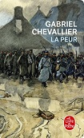
Extraits - La Peur - Gabriel CHEVALLIER
Auguste en profite pour passer plus de temps avec son frère jumeau à qui on retire enfin la balle de son bras ...
Ma chère Augustine,
Je t’écris ce soir deux mots pour te dire que je suis toujours en bonne santé et je désire que ma carte te trouve de même. Je n’ai pas vu Antoine depuis lundi, je pense aller le voir un de ces jours.
Je crois que je vais aller au dépôt un de ces jours, il est arrivé de nouveaux malades.
Je ne peux pas te dire si j’aurais une permission en sortant d’ici, je n’y compte pas trop. Depuis hier il fait beau, mais il gèle les nuits.
Ton parrain qui t’embrasse bien fort.
Auguste
Chers parents,
Je vous écris ce matin pour vous dire que je va au dépôt ce matin. Je passerai probablement la visite demain ou dimanche. Je pourrai voir Antoine ce soir.
Demain, je vous écrirai pour vous donner mon adresse et je vous dirai si je peux aller vous voir. Pour le moment, je n’y compte.
Si vous m’écrivez, envoyez les lettres à Antoine, je pourrai le voir tous les jours.
Je suis en très bonne santé, je désire que ma carte vous trouve de même.
Auguste
Chers parents,
J’ai fait mon voyage bien tranquille, je suis arrivé à 1 heure et demie et je suis allé voir Antoine.
On lui a enlevé sa balle samedi, il a un peu souffert mais maintenant ça va mieux.
Ce soir, je vous écrirai une plus longue lettre. Pour le moment, tout va bien.
Auguste
Je vous envoie ces quelques lignes pour vous dire que je suis en bonne santé. Mon bras va bien.
J’ai reçu une carte de Désiré, il est en bonne santé. Ils sont dans le Pas de Calais.
Je vous embrasse tous bien fort.
Antoine
Ma chère Augustine,
Me voilà de nouveau installé au régiment.
Je suis en bonne santé, je vois Antoine tous les soirs à cinq heures. Il va bien mieux, son bras ne lui fait pas trop mal. Dans trois ou quatre jours, il sera guéri.
Depuis que je suis arrivé au dépôt, je n’ai encore rien fait. Hier, pour m’amuser, j’ai rattaché les boutons de ma capote. Aujourd’hui, je n’ai rien à faire.
On est assez bien nourris, mieux qu’on l’était à Epinal. Hier on a mangé du poulet, bien souvent c’est du mouton, c’est assez bien préparé.
Pour le moment, il n’y a pas de départs . Je ne peux pas te dire si je partirai des premiers.
Ton parrain qui t’aime.
Auguste
Ma chère petite Léa,
Je suis toujours en bonne santé ainsi qu'Antoine, il va bien mieux. Je le vois tous les soirs.
Je ne va pas à l’exercice, je n’ai absolument rien à faire.
Ton frère qui t’aime.
Auguste
Chère sœur,
Je suis toujours en très bonne santé. J’ai vu Antoine hier soir, il va bien. Il ne s’embête pas trop depuis que je suis là.
Tous les soirs je suis avec lui et puis ils ont trois fois par semaine concert pour les amuser.
Pour moi, je va probablement rester encore 15 jours ici. Je m’attendais bien à partir pour un convoi.
Auguste
Chère Maria,
Je viens de recevoir ta carte avec plaisir. Je vois que tout va assez bien et je suis content d’apprendre que vous avez des nouvelles de Gabriel. Il écrit assez souvent à Antoine, il ne trouve pas le métier trop dur.
Antoine va très bien, son bras a beaucoup de mieux. Bientôt il sera complètement guéri, il est bien soigné. Il va à la promenade quand il fait beau.
Au dépôt, ça va toujours assez bien , il va y avoir un autre convoi un de ces jours. Pour le moment, je sais pas si je partirai. On ne sait jamais rien d’avance.
Auguste
Cher Camarade,
J’ai reçu une carte ce matin de ton frère qui m’a fait bien plaisir d’apprendre et me dit qu’il y a sept jours pour les Vosges.
Il est probable que je serais encore au séminaire quand ton frère rentrera de perme. Les permissions de sortir en ville ne sont encore pas rétablies.
Ton ami dévoué.
Léon Parmentier
Les mois se sont lentememt écoulés et bientôt toute la famille échange les voeux pour la nouvelle année qui s'annonce, en espérant que cette nouvelle année apportera la paix.
Cher frère,
Je fais réponse à ta belle carte qui m’a bien fait plaisir, en voyant que tu es toujours en bonne santé et surtout que tu es encore au dépôt. Tu as encore le temps d’aller en campagne.
Tu me dis que tu vas voir Antoine tous les soirs après la soupe, nous sommes tous bien contents que tu puisses passer quelques heures avec lui.
Il nous a écrit samedi, Gabriel aussi, il était en bonne santé.
Embrasse bien mon petit Antoine à ma place, je voudrais bien savoir s’il se lève.
Accepte cher frère mes meilleurs voeux de bonheur. Ta sœur qui pense à toi.
Léa